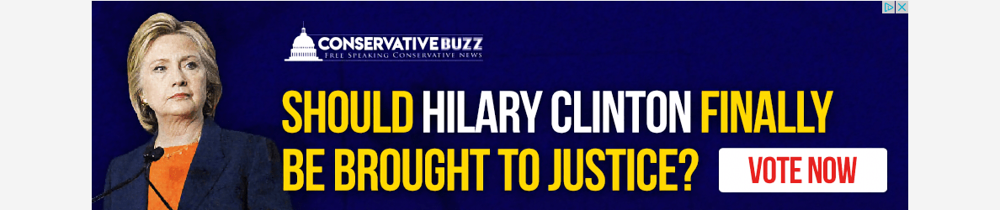
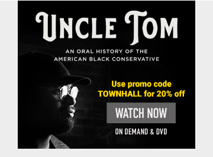
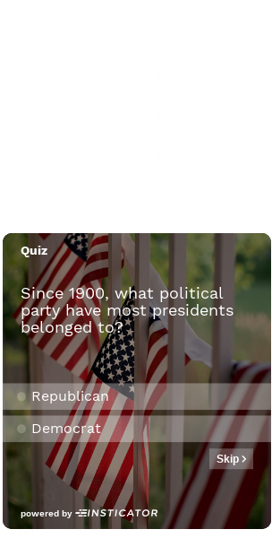
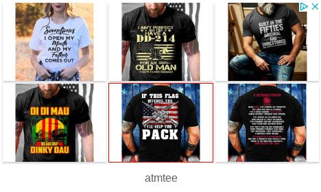
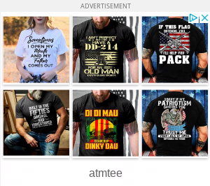

| 1463224 |  | 2.30 | | politicized | 0.800 | | clickbait | 0.600 | | manipulative | 0.500 | | dislike_product | 0.300 | | deceptive | 0.200 | | good_design | 0.200 | | bad_design | 0.100 | | distasteful | 0.100 | | entertaining | 0.100 | | like_product | 0.100 | | simple | 0.100 | | trustworthy | 0.100 | | useful | 0.100 |
| | | | - If they can't even spell her name right, I'm not clicking.
|
| 1463954 |  | 3.80 | | good_design | 0.400 | | dislike_product | 0.300 | | like_product | 0.300 | | politicized | 0.300 | | simple | 0.300 | | useful | 0.300 | | boring | 0.200 | | deceptive | 0.200 | | distasteful | 0.200 | | entertaining | 0.200 | | manipulative | 0.200 | | bad_design | 0.100 | | clickbait | 0.100 | | unclear | 0.100 |
| - Entertainment
- Political Content
| | | - Promo codes usually are for partnerships, and the more they get the more money they make for it, recouping the cost of the ads.
- That doesn't sound fun to watch for me.
|
| 1464747 | | 3.00 | | dislike_product | 0.500 | | politicized | 0.500 | | bad_design | 0.400 | | deceptive | 0.300 | | manipulative | 0.300 | | simple | 0.300 | | boring | 0.200 | | clickbait | 0.100 | | distasteful | 0.100 | | entertaining | 0.100 | | good_design | 0.100 | | like_product | 0.100 |
| | | | - Not a fan of Fox news nor what they stand for.
|
| 1465924 | | 3.60 | | deceptive | 0.400 | | entertaining | 0.400 | | manipulative | 0.400 | | dislike_product | 0.300 | | distasteful | 0.300 | | good_design | 0.300 | | boring | 0.200 | | clickbait | 0.200 | | politicized | 0.200 | | simple | 0.200 | | bad_design | 0.100 | | like_product | 0.100 | | unclear | 0.100 | | useful | 0.100 |
| | | | |
| 1469836 |  | 3.50 | | bad_design | 0.400 | | simple | 0.300 | | clickbait | 0.100 | | dislike_product | 0.100 | | distasteful | 0.100 | | like_product | 0.100 | | manipulative | 0.100 | | politicized | 0.100 | | useful | 0.100 |
| | | | - Masks don't work and should NOT be mandatory. Remember two weeks to flatten the curve. CDC just dropped the numbers by 90 percent
- I don't like or dislike the ad. That's why I chose neutral.
|
| 1471141 | | 2.80 | | politicized | 0.600 | | manipulative | 0.500 | | deceptive | 0.300 | | clickbait | 0.200 | | like_product | 0.200 | | boring | 0.100 | | dislike_product | 0.100 | | distasteful | 0.100 | | entertaining | 0.100 | | simple | 0.100 |
| | | | |
| 1473602 |  | 3.50 | | politicized | 0.400 | | bad_design | 0.300 | | clickbait | 0.300 | | entertaining | 0.300 | | like_product | 0.300 | | dislike_product | 0.200 | | unclear | 0.200 | | useful | 0.200 | | deceptive | 0.100 | | distasteful | 0.100 | | manipulative | 0.100 |
| | | | - This appears to be an ad (most likely) masquerading as a survey.
|
| 1477215 |  | 2.40 | | bad_design | 0.400 | | dislike_product | 0.400 | | politicized | 0.400 | | simple | 0.300 | | deceptive | 0.200 | | distasteful | 0.200 | | manipulative | 0.200 | | unclear | 0.200 | | boring | 0.100 | | clickbait | 0.100 | | entertaining | 0.100 | | good_design | 0.100 | | trustworthy | 0.100 |
| | | | - Its peoples freedom of speech to wear what you want.Even if I don't agree with it.
- Could just political but I can't really tell.
- I like novelty t-shirts but I wouldn't be interested in any of these in the ad.
|
| 1480493 | | 3.60 | | dislike_product | 0.600 | | bad_design | 0.500 | | simple | 0.500 | | entertaining | 0.400 | | politicized | 0.400 | | deceptive | 0.300 | | distasteful | 0.300 | | good_design | 0.300 | | manipulative | 0.300 | | like_product | 0.200 | | useful | 0.200 | | boring | 0.100 |
| | | | - I like Lara Logan but I really dislike Nancy Grace.
- Not into politics
- It may not be graphic, but I do think Fox News (and especially Nancy Grace) is repugnant.
- No
- Fox Nation is very biased and the spin they present on their programming is not something i'm interested in.
|
| 1480748 |  | 2.80 | | bad_design | 0.500 | | boring | 0.400 | | clickbait | 0.200 | | dislike_product | 0.200 | | entertaining | 0.200 | | politicized | 0.200 | | simple | 0.200 | | distasteful | 0.100 | | good_design | 0.100 | | like_product | 0.100 | | manipulative | 0.100 |
| | | | - These look like the shirts that algorithms design. "My name is (KAREN) and I am a (SCORPIO) and I KICK ASS!" type of thing.
|